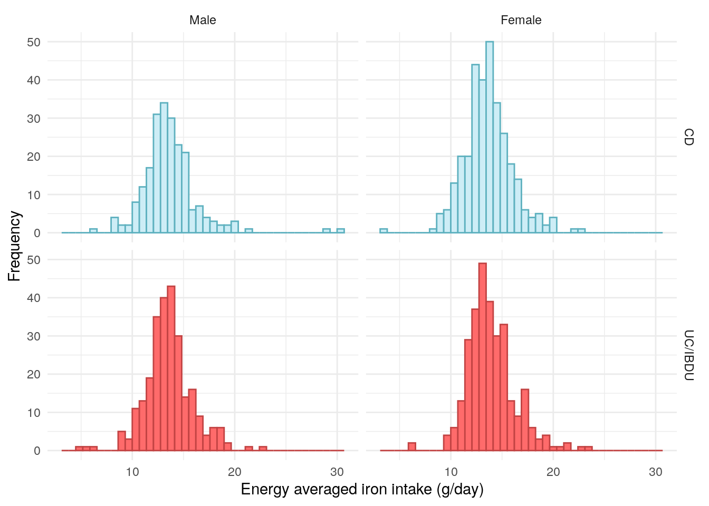
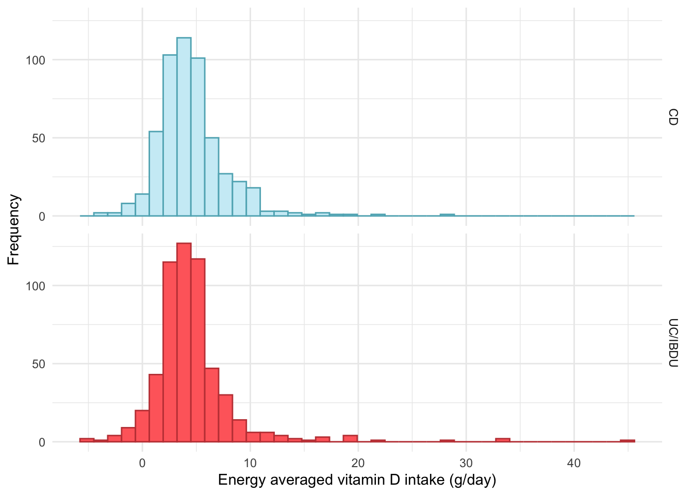
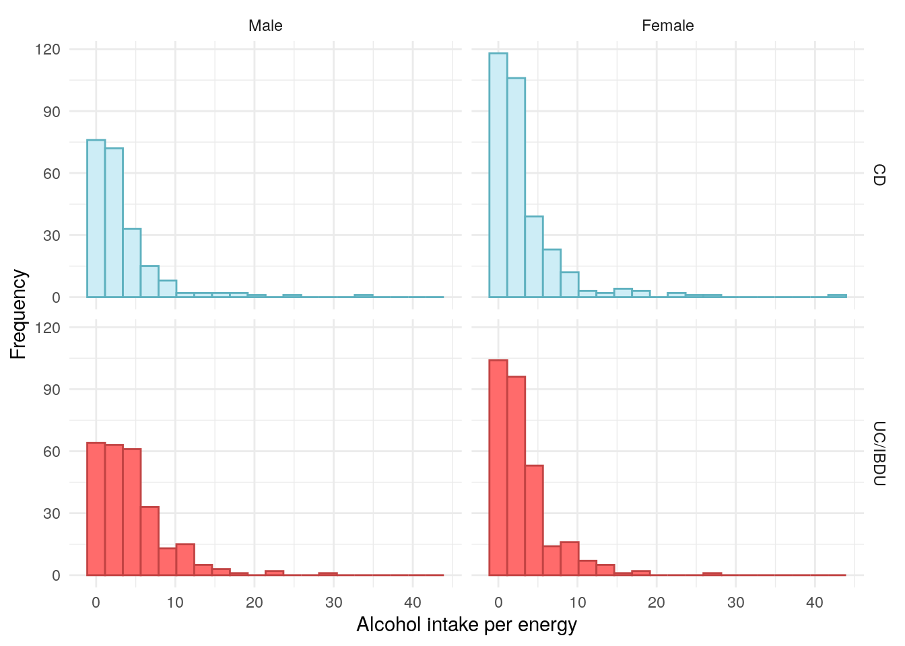
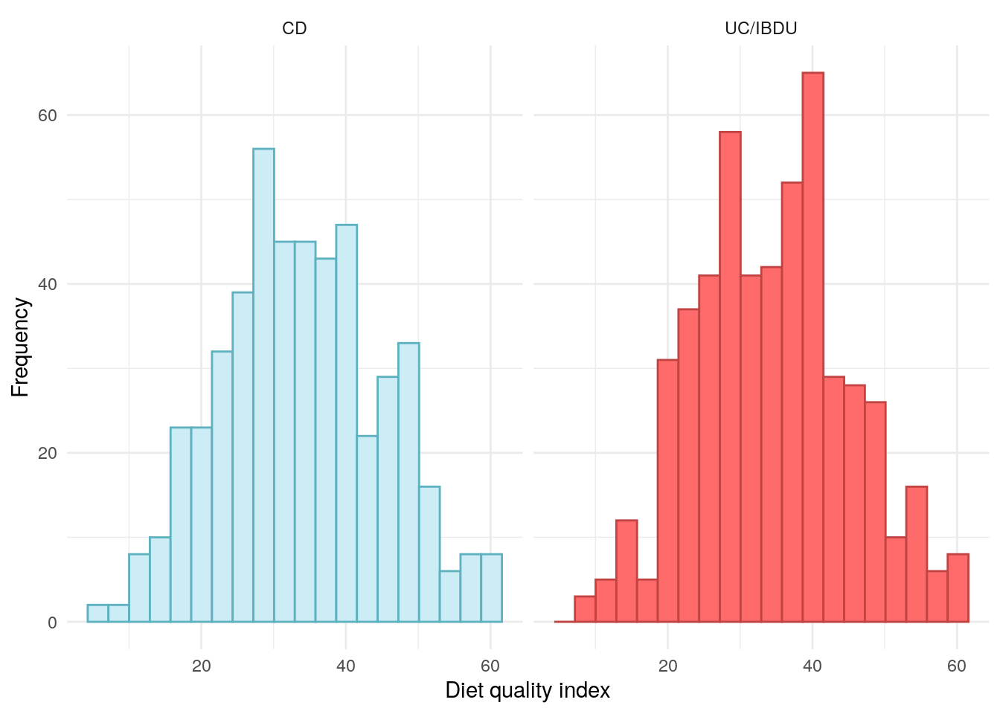
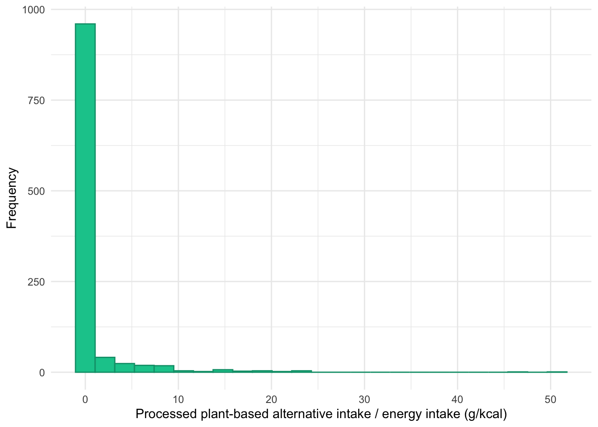

set.seed(123)################ Packages ################library(plyr)# Used for mapping valuessuppressPackageStartupMessages(library(tidyverse))# ggplot2, dplyr, and magrittrlibrary(readxl)# Read in Excel fileslibrary(lubridate)# Handle dateslibrary(datefixR)# Standardise dateslibrary(patchwork)# Arrange ggplotslibrary(ggbeeswarm)# Generate tablessuppressPackageStartupMessages(library(table1))library(knitr)library(pander)# Generate flowchart of cohort derivationlibrary(DiagrammeR)library(DiagrammeRsvg)# paths to PREdiCCt dataif(file.exists("/docker")){# If running in dockerdata.path<-"/analysis/data/final/20221004/"redcap.path<-"/analysis/data/final/20231030/"prefix<-"/analysis/data/end-of-follow-up/"outdir<-"/analysis/data/processed/"}else{# Run on OS directlydata.path<-"/Volumes/igmm/cvallejo-predicct/predicct/final/20221004/"redcap.path<-"/Volumes/igmm/cvallejo-predicct/predicct/final/20231030/"prefix<-"/Volumes/igmm/cvallejo-predicct/predicct/end-of-follow-up/"outdir<-"/Volumes/igmm/cvallejo-predicct/predicct/processed/"}demo<-readRDS(paste0(outdir, "demo-biochem.RDS"))FFQ<-read_xlsx(paste0(prefix,"predicct ffq_nutrientfood groupDQI all foods_data (n1092)Nov2022.xlsx"))FFQ$ParticipantNo<-FFQ$participantnodemo<-merge(demo,FFQ[, c("ParticipantNo", "Meat_sum", "fibre", "PUFA_percEng", "NOVAScore_cat")], by ="ParticipantNo", all.x =TRUE, all.y =FALSE)
Whilst data for many dietary variables have been collected, this report will focus on the data outlined in the SAP.
Protein from animal-sources
Dietary fibre
Polyunsaturated fatty acids (PUFAs)
Nova intake score
As additional analyses, we also explore alcohol use and diet quality and daily intake of food subgroups standardised by energy intake.
The data for these variables were extracted from the FFQs. As reported associations between dietary data and IBD are often specific to a form of IBD rather than IBD as a whole, these data will be presented as stratified by disease type.
Protein from meat sources
Figure 1 suggests there are relatively few vegetarians in the PREdiCCt cohort. Whilst some extreme values were observed for protein from meat sources, they remain plausible.
Code
demo%>%drop_na(Meat_sum)%>%ggplot(aes(x =Meat_sum, color =diagnosis2, fill =diagnosis2))+geom_histogram(bins =25)+theme_minimal()+theme(legend.position ="none")+labs( x ="Protein from meat sources (g)", y ="Frequency", color ="IBD type", fill ="IBD type")+scale_fill_manual( labels =c("UC/IBDU", "Crohn's"), values =c("#CDEDF6", "#FF6B6B"))+scale_color_manual( labels =c("UC/IBDU", "Crohn's"), values =c("#5EB1BF", "#C24343"))+facet_grid(rows =vars(diagnosis2))
Figure 1: Distribution of protein intake from meat.
No association was observed between protein intake from meat and FC.
Table 2: ANOVA between protein intake from meat and FC groups in the UC/IBDU subcohort.
Analysis of Variance Model
Df
Sum Sq
Mean Sq
F value
Pr(>F)
cat
2
3350
1675
2.814
0.06088
Residuals
512
304730
595.2
NA
NA
Dietary fibre
Fibre has frequently investigated as a potential factor in IBD pathogenesis, particularly in CD.
A study of 170,776 women across 26 years found fibre intake, particularly fibre derived from fruits, to be low for incident CD patients (Ananthakrishnan et al. 2013).
A US study of 1,130 CD subjects found CD patients who reported that they did not avoid high-fibre foods were approximately 40% less likely to have a disease flare in a 6-month period than those who avoided high-fibre foods (Brotherton et al. 2016).
There is less evidence of a relationship between UC and dietary fibre.
There does not appear to be substantial differences in fibre between CD and UC/IBDU PREdiCCt participants.
Table 4: ANOVA between dietary fibre and FC groups in the UC/IBDU subcohort.
Analysis of Variance Model
Df
Sum Sq
Mean Sq
F value
Pr(>F)
cat
2
80.2
40.1
0.3739
0.6882
Residuals
512
54910
107.2
NA
NA
Polyunsaturated fatty acids
PUFAs exhibit anti-inflammatory properties and there is evidence of a relationship between PUFAs and UC incidence (Marion-Letellier et al. 2013). Research suggests that a diet with a poor balance of n-3 and n-6 PUFAs, commonly seen in “Western” diets is associated with IBD risk.
The PREdiCCt SAP states n-6 PUFAs will be examined. However, the data obtained from the FFQs describes PUFAs as a whole (including n-3 PUFAs).
Table 6: ANOVA between polyunsaturated fatty acids and FC groups in the UC/IBDU subcohort.
Analysis of Variance Model
Df
Sum Sq
Mean Sq
F value
Pr(>F)
cat
2
10.72
5.359
3.378
0.03487
Residuals
512
812.1
1.586
NA
NA
Nova intake score
There has been a great deal of recent research interest in ultra processed food (UPF) and IBD. For example, Narula et al. (2021) found UPF intake to be positively associated with IBD risk.
The Nova score is a popular approach for classifying UPFs (Monteiro et al. 2017). Food is classified as either unprocessed, processed culinary, processed food, or ultra-processed via the Nova score. The University of Aberdeen have developed an extension of the Nova score, the Nova intake score, which can be used to categorise individuals and their diets instead of individual food items.
The following definition of the Nova intake score was written by Liam McAdie during a 5th year medical elective in which he worked on the PREdiCCt dietary data. The formulae have received minor modifications, but otherwise the definitions remain unchanged from McAdie’s work.
Definition
When completing the FFQ, participants were asked to report (a) portion size normally consumed, (b) number of times this portion is consumed in one day and (c) number of days per week food type is consumed. Participant’s daily average consumption (in grams) of a food and drink type (x) was calculated by:
x=\frac{c}{7}(a+b)
Standardised number of portions consumed daily for food and drink type (y) was calculated by dividing consumption (x) by the Foods Standard Agency average UK-portion size (z).
y= \frac{x}{z}
Nova intake scores (N) were calculated by multiplying the number of standardised portions consumed (y) by their corresponding Nova score (M) assigned in the database. This process is repeated for all 169 food and drink types and totalled to give one overall Nova intake score. This score is a marker representative of UPF intake.
N = \sum_{i = 1}^{169} (y_i M_i)
Results
The distribution of Nova intake score appears to be uniform across the cohort, as such, it seems likely that these data have been mapped to quantiles and are no longer describing Nova Score categories.
Code
demo$NOVAScore_cat<-factor(demo$NOVAScore_cat, levels =1:4, labels =c("Unprocessed","Processed culinary","Procesed food","Ultra-processed"))demo%>%drop_na(NOVAScore_cat)%>%ggplot(aes(x =NOVAScore_cat, color =diagnosis2, fill =diagnosis2))+geom_bar()+theme_minimal()+theme(legend.position ="none")+labs( x ="Nova intake score", y ="Frequency", color ="IBD type", fill ="IBD type")+scale_fill_manual( values =c("#CDEDF6", "#FF6B6B"))+scale_color_manual( values =c("#5EB1BF", "#C24343"))+facet_grid(rows =vars(diagnosis2))
Figure 4: Distribution of Nova intake scores.
No significant association was observed between Nova intake scores and FC groups.
Table 8: Chi-squared test between Nova intake score and FC groups in the UC/IBDU subcohort.
Pearson’s Chi-squared test: .
Test statistic
df
P value
4.197
6
0.6501
Iron intake
Iron deficiency anaemia is a common complication observed in IBD patients (Resál, Farkas, and Molnár 2021). It should be noted that only dietary intake of iron was collected by PREdiCCt. Supplements were not recorded which may skew these data. As iron intake guidelines differ by sex, iron intake will be presented stratified by both sex and IBD type.
Code
demo<-merge(demo,FFQ[, c("ParticipantNo", "EA_Fe")], by ="ParticipantNo", all.x =TRUE, all.y =FALSE)demo%>%drop_na(EA_Fe)%>%ggplot(aes(x =EA_Fe, color =diagnosis2, fill =diagnosis2))+geom_histogram(bins =40)+theme_minimal()+theme(legend.position ="none")+labs( x ="Energy averaged iron intake (g/day)", y ="Frequency", color ="IBD type", fill ="IBD type")+scale_fill_manual( values =c("#CDEDF6", "#FF6B6B"))+scale_color_manual( values =c("#5EB1BF", "#C24343"))+facet_grid(rows =vars(diagnosis2), cols =vars(Sex))

No significant associations were found between energy averaged iron intake and FC.
Table 10: ANOVA between dietary iron and FC groups in the UC/IBDU subcohort.
Analysis of Variance Model
Df
Sum Sq
Mean Sq
F value
Pr(>F)
cat
2
14.45
7.223
1.392
0.2494
Residuals
512
2656
5.188
NA
NA
Vitamin D intake
Code
demo<-merge(demo,FFQ[, c("ParticipantNo", "EA_VitD")], by ="ParticipantNo", all.x =TRUE, all.y =FALSE)demo%>%drop_na(EA_VitD)%>%ggplot(aes(x =EA_VitD, color =diagnosis2, fill =diagnosis2))+geom_histogram(bins =40)+theme_minimal()+theme(legend.position ="none")+labs( x ="Energy averaged vitamin D intake (g/day)", y ="Frequency", color ="IBD type", fill ="IBD type")+scale_fill_manual( values =c("#CDEDF6", "#FF6B6B"))+scale_color_manual( values =c("#5EB1BF", "#C24343"))+facet_grid(rows =vars(diagnosis2))

No significant associations were found between energy averaged vitamin D and FC.
Table 12: ANOVA between vitamin D and FC groups in the UC/IBDU subcohort.
Analysis of Variance Model
Df
Sum Sq
Mean Sq
F value
Pr(>F)
cat
2
53.09
26.55
1.679
0.1875
Residuals
512
8094
15.81
NA
NA
Alcohol use
As there are differences between sexes in terms of both consumption of alcohol and risk of alcohol-associated organ damage (Ceylan-Isik, McBride, and Ren 2010), alcohol intake will be stratified by both IBD type and sex.
Code
demo<-merge(demo,FFQ[, c("ParticipantNo", "Alcohol_percEng")], by ="ParticipantNo", all.x =TRUE, all.y =FALSE)demo%>%drop_na(Alcohol_percEng)%>%ggplot(aes(x =Alcohol_percEng, color =diagnosis2, fill =diagnosis2))+geom_histogram(bins =20)+facet_grid(cols =vars(Sex), rows =vars(diagnosis2))+theme_minimal()+labs( x ="Alcohol intake per energy", y ="Frequency", color ="Diagnosis", fill ="Diagnosis")+scale_fill_manual( values =c("#CDEDF6", "#FF6B6B"))+scale_color_manual( values =c("#5EB1BF", "#C24343"))+theme(legend.position ="none")

Figure 5: Distribution of alcohol per energy intake, stratified by sex.
Table 16: ANOVA between alcohol intake and FC groups for females in the UC/IBDU subcohort.
Analysis of Variance Model
Df
Sum Sq
Mean Sq
F value
Pr(>F)
cat
2
26.99
13.49
1.073
0.3434
Residuals
277
3484
12.58
NA
NA
Diet quality
Diet quality is assessed via diet quality index.
Code
demo<-merge(demo,FFQ[, c("ParticipantNo", "dqi_tot")], by ="ParticipantNo", all.x =TRUE, all.y =FALSE)demo%>%drop_na(dqi_tot)%>%ggplot(aes(x =dqi_tot, color =diagnosis2, fill =diagnosis2))+geom_histogram(bins =20)+facet_grid(cols =vars(diagnosis2))+theme_minimal()+labs( x ="Diet quality index", y ="Frequency", color ="Diagnosis", fill ="Diagnosis")+scale_fill_manual( values =c("#CDEDF6", "#FF6B6B"))+scale_color_manual( values =c("#5EB1BF", "#C24343"))+theme(legend.position ="none")

Figure 6: Distribution of diet quality index, stratified by IBD type.
In addition to exploring UPF intake as a whole, we also explore UPF intake by subcategories. This approach is based on the methodology used by Cordova et al. (2023). The following categories have been identified by Dr Maiara Brusco De Freitas using FFQ groupings.
Total intake of the following subgroups (in grams) have been divided by daily kcal intake and then multiplied by 100 to ensure very small values are not reported (these small values also cause computational issues in downstream analyses).
Animal-based products (processed meat) is the only subgroup considered which we found to be significantly associated with FC at recruitment.
Table 26: ANOVA between processed meat intake and FC groups in the UC/IBDU subcohort.
Analysis of Variance Model
Df
Sum Sq
Mean Sq
F value
Pr(>F)
cat
2
28.04
14.02
6.187
0.002214
Residuals
512
1160
2.266
NA
NA
As intake of processed meat appeared to be associated with FC at recruitment for the UC/IBDU subcohort, we explored the distribution of processed meat intake within FC categories for this subcohort. From Figure 11, it appears subjects with FC<50μg/g at recruitment were more likely to consume no, or low levels of, processed meat.
Figure 11: Distribution of processed animal-based product intake, divided by daily energy intake, and stratified by faecal calprotectin category for the UC/IBU cohort.
As one would likely expect, consumption of processed plant-based alternatives is low.
Code
FFQ$processedPlantIntake<-with(FFQ,(Milk3d_grams+Sav_etc10d_grams+Sav_etc10e_grams+Sav_etc10f_grams)/EnergykCAL)*100demo<-merge(demo,FFQ[, c("ParticipantNo", "processedPlantIntake")], by ="ParticipantNo", all.x =TRUE, all.y =FALSE)demo%>%drop_na(processedPlantIntake)%>%ggplot(aes(x =processedPlantIntake, color =diagnosis2, fill =diagnosis2))+geom_histogram(bins =25)+theme_minimal()+xlab("Processed plant-based alternative intake / energy intake (g/kcal)")+ylab("Frequency")+theme(legend.position ="none")+scale_fill_manual( values =c("#CDEDF6", "#FF6B6B"))+scale_color_manual( values =c("#5EB1BF", "#C24343"))+facet_grid(rows =vars(diagnosis2))

Figure 12: Distribution of processed plant-based alternatives divided by daily energy intake.
Table 28: ANOVA between processed plant-based alternatives intake and FC groups in the UC/IBDU subcohort.
Analysis of Variance Model
Df
Sum Sq
Mean Sq
F value
Pr(>F)
cat
2
8.103
4.052
0.7877
0.4554
Residuals
512
2633
5.143
NA
NA
Processed food intake for ileal vs colonic Crohn’s disease
We elected to explore potential associations between intake of the previously explored processed food subgroups and either ileal or colonic CD. For these analyses, ileocolonic disease (Montreal L3) was considered to be an example of colonic disease.
No significant associations were found across any of the processed food subgroups considered.
Code
demo.cd<-readRDS(paste0(outdir, "demo-cd.RDS"))plt.lab<-"Ileal vs Colonic"demo.cd$ileal<-plyr::mapvalues(demo.cd$Location, from =c("L1", "L2", "L3", "L4 only"), to =c("Ileal","Colonic","Colonic",NA))
The following `from` values were not present in `x`: L4 only
Code
demo.cd<-demo%>%select(ParticipantNo,breadIntake,sweetIntake,drinkIntake,processedMeatIntake,processedPlantIntake# fruitIntake,# vegIntake,# redMeatIntake,# whiteMeatIntake,# whiteFishIntake)%>%merge(x =demo.cd, y =., by ="ParticipantNo", all.x =TRUE, all.y =FALSE)
Table 37: ANOVA between vegetable/legume intake and FC groups in the UC/IBDU subcohort.
Analysis of Variance Model
Df
Sum Sq
Mean Sq
F value
Pr(>F)
cat
2
431.6
215.8
4.055
0.0179
Residuals
511
27198
53.22
NA
NA
As vegetable/legume intake was found to be significantly associated with FC at recruitment for the UC/IBDU cohort, we have plotted the distribution stratified by FC category.
Figure 19 presents macronutrient, PUFA and UPF intake as percentages of total energy intake.
Code
FFQ$Prot_percEng<-(FFQ$Protng*4/FFQ$EnergykCAL)*100comparison<-reshape2::melt(FFQ, id.vars ="ParticipantNo", measure.vars =c("CHO_percEng","Fat_percEng","Prot_percEng","SatFat_percEng","PUFA_percEng"))comparison<-merge(comparison,demo[, c("ParticipantNo", "Sex", "diagnosis2")], by ="ParticipantNo", all.x =TRUE, all.y =FALSE)p<-ggplot(comparison,aes(color =variable, fill =variable, y =value, x =Sex))+geom_violin()+facet_grid(~diagnosis2, scales ="free_x", space ="free_x", switch ="x")+theme_minimal()+theme( strip.placement ="outside", strip.background =element_rect(fill ="white"), strip.clip ="on", axis.title.x =element_blank(), legend.position ="bottom")+scale_fill_manual( values =c("#4F359B","#FFED49","#2EC4B6","#E71D36","#FF9F1C"), labels =c("Carbohydrate","Fat","Protein","Saturated fat","Polyunsaturated fatty acids"))+scale_color_manual( values =c("#392376","#ADA009","#00877C","#9F1C29","#B06B01"), labels =c("Carbohydrate","Fat","Protein","Saturated fat","Polyunsaturated fatty acids"))+labs( y ="% of total energy intake", color ="", fill ="")+guides( colour =guide_legend(nrow =1), fill =guide_legend(nrow =1))ggsave("../plots/baseline/diet.png", p, width =12*0.8, height =7*0.8)ggsave("../plots/baseline/diet.pdf", p, width =12*0.8, height =7*0.8)p
Figure 19: Dietary distribution of the FFQ subcohort expressed as percentages of energy intake and stratified by sex and diagnosis of either Crohn’s disease or ulcerative colitis/inflammatory bowel disease unclassified.
Ananthakrishnan, Ashwin N., Hamed Khalili, Gauree G. Konijeti, Leslie M. Higuchi, Punyanganie de Silva, Joshua R. Korzenik, Charles S. Fuchs, Walter C. Willett, James M. Richter, and Andrew T. Chan. 2013. “A Prospective Study of Long-Term Intake of Dietary Fiber and Risk of Crohn’s Disease and Ulcerative Colitis.”Gastroenterology 145 (5): 970–77. https://doi.org/10.1053/j.gastro.2013.07.050.
Brotherton, Carol S., Christopher A. Martin, Millie D. Long, Michael D. Kappelman, and Robert S. Sandler. 2016. “Avoidance of Fiber Is Associated with Greater Risk of Crohn’s Disease Flare in a 6-Month Period.”Clinical Gastroenterology and Hepatology 14 (8): 1130–36. https://doi.org/10.1016/j.cgh.2015.12.029.
Ceylan-Isik, Asli F., Shawna M. McBride, and Jun Ren. 2010. “Sex Difference in Alcoholism: Who Is at a Greater Risk for Development of Alcoholic Complication?”Life Sciences 87 (5–6): 133–38. https://doi.org/10.1016/j.lfs.2010.06.002.
Cordova, Reynalda, Vivian Viallon, Emma Fontvieille, Laia Peruchet-Noray, Anna Jansana, Karl-Heinz Wagner, Cecilie Kyrø, et al. 2023. “Consumption of Ultra-Processed Foods and Risk of Multimorbidity of Cancer and Cardiometabolic Diseases: A Multinational Cohort Study.”The Lancet Regional Health - Europe 35 (December): 100771. https://doi.org/10.1016/j.lanepe.2023.100771.
Marion-Letellier, Rachel, Guillaume Savoye, Beck Paul L., Remo Panaccione, and Subrata Ghosh. 2013. “Polyunsaturated Fatty Acids in Inflammatory Bowel Diseases: A Reappraisal of Effects and Therapeutic Approaches.”Inflammatory Bowel Diseases 19 (3): 650–61. https://doi.org/10.1097/mib.0b013e3182810122.
Monteiro, Carlos Augusto, Geoffrey Cannon, Jean-Claude Moubarac, Renata Bertazzi Levy, Maria Laura C Louzada, and Patrícia Constante Jaime. 2017. “The UN Decade of Nutrition, the NOVA Food Classification and the Trouble with Ultra-Processing.”Public Health Nutrition 21 (1): 5–17. https://doi.org/10.1017/s1368980017000234.
Narula, Neeraj, Emily C L Wong, Mahshid Dehghan, Andrew Mente, Sumathy Rangarajan, Fernando Lanas, Patricio Lopez-Jaramillo, et al. 2021. “Association of Ultra-Processed Food Intake with Risk of Inflammatory Bowel Disease: Prospective Cohort Study.”BMJ, July, n1554. https://doi.org/10.1136/bmj.n1554.
Resál, Tamás, Klaudia Farkas, and Tamás Molnár. 2021. “Iron Deficiency Anemia in Inflammatory Bowel Disease: What Do We Know?”Frontiers in Medicine 8 (July). https://doi.org/10.3389/fmed.2021.686778.
Source Code
---title: "Diet"author: - name: "Nathan Constantine-Cooke" corresponding: true url: https://scholar.google.com/citations?user=2emHWR0AAAAJ&hl=en&oi=ao affiliations: - ref: CGEM - ref: HGU - name: "Beatriz Gros" url: https://ibd-eii.com/ affiliations: - ref: Spain - ref: IBD - name: "Maiara Brusco De Freitas" url: "https://scholar.google.com/citations?user=RfXbXL8AAAAJ&hl=en&oi=ao" affiliations: - ref: PREDICTbibliography: Baseline.bib ---## Introduction```{R Setup}set.seed(123)################ Packages ################library(plyr) # Used for mapping valuessuppressPackageStartupMessages(library(tidyverse)) # ggplot2, dplyr, and magrittrlibrary(readxl) # Read in Excel fileslibrary(lubridate) # Handle dateslibrary(datefixR) # Standardise dateslibrary(patchwork) # Arrange ggplotslibrary(ggbeeswarm)# Generate tablessuppressPackageStartupMessages(library(table1))library(knitr)library(pander)# Generate flowchart of cohort derivationlibrary(DiagrammeR)library(DiagrammeRsvg)# paths to PREdiCCt dataif (file.exists("/docker")) { # If running in docker data.path <- "/analysis/data/final/20221004/" redcap.path <- "/analysis/data/final/20231030/" prefix <- "/analysis/data/end-of-follow-up/" outdir <- "/analysis/data/processed/"} else { # Run on OS directly data.path <- "/Volumes/igmm/cvallejo-predicct/predicct/final/20221004/" redcap.path <- "/Volumes/igmm/cvallejo-predicct/predicct/final/20231030/" prefix <- "/Volumes/igmm/cvallejo-predicct/predicct/end-of-follow-up/" outdir <- "/Volumes/igmm/cvallejo-predicct/predicct/processed/"}demo <- readRDS(paste0(outdir, "demo-biochem.RDS"))FFQ <- read_xlsx(paste0( prefix, "predicct ffq_nutrientfood groupDQI all foods_data (n1092)Nov2022.xlsx"))FFQ$ParticipantNo <- FFQ$participantnodemo <- merge(demo, FFQ[, c("ParticipantNo", "Meat_sum", "fibre", "PUFA_percEng", "NOVAScore_cat")], by = "ParticipantNo", all.x = TRUE, all.y = FALSE)```PREdiCCt has collected data on diet via food frequency questionnaires (FFQs) andfood diaries. This dietary data has been analysed by staff at the[University of Aberdeen](https://www.abdn.ac.uk/), primarily by[Dr Janet Kyle](https://www.abdn.ac.uk/iahs/profiles/j.kyle), [Dr Graham Horgan](https://www.bioss.ac.uk/people/graham), and[Professor Alex Johnstone](https://www.abdn.ac.uk/rowett/research/profiles/alex.johnstone).Whilst data for many dietary variables have been collected, this reportwill focus on the data outlined in the SAP.1. Protein from animal-sources1. Dietary fibre1. Polyunsaturated fatty acids (PUFAs)1. Nova intake scoreAs additional analyses, we also explore alcohol use and diet quality and dailyintake of food subgroups standardised by energy intake. The data for these variables were extracted from the FFQs. As reportedassociations between dietary data and IBD are often specific to a form of IBDrather than IBD as a whole, these data will be presented as stratified bydisease type. ## Protein from meat sources@fig-meat-sum-dist suggests there are relatively few vegetarians in the PREdiCCtcohort. Whilst some extreme values were observed for protein from meat sources,they remain plausible. ```{R}#| label: fig-meat-sum-dist#| fig-cap: "Distribution of protein intake from meat."#| warning: falsedemo %>%drop_na(Meat_sum) %>%ggplot(aes(x = Meat_sum, color = diagnosis2, fill = diagnosis2)) +geom_histogram(bins =25) +theme_minimal() +theme(legend.position ="none") +labs(x ="Protein from meat sources (g)",y ="Frequency",color ="IBD type",fill ="IBD type" ) +scale_fill_manual(labels =c("UC/IBDU", "Crohn's"),values =c("#CDEDF6", "#FF6B6B") ) +scale_color_manual(labels =c("UC/IBDU", "Crohn's"),values =c("#5EB1BF", "#C24343") ) +facet_grid(rows =vars(diagnosis2))```No association was observed between protein intake from meat and FC.```{R}#| label: tbl-meat-sum-cd#| tbl-cap: "ANOVA between protein intake from meat and FC groups in the CD subcohort."demo %>%filter(diagnosis2 =="CD") %>%aov(formula = Meat_sum ~ cat, data = .) %>%summary() %>%pander()``````{R}#| label: tbl-meat-sum-uc#| tbl-cap: "ANOVA between protein intake from meat and FC groups in the UC/IBDU subcohort."demo %>%filter(diagnosis2 =="UC/IBDU") %>%aov(formula = Meat_sum ~ cat, data = .) %>%summary() %>%pander()```## Dietary fibreFibre has frequently investigated as a potential factor in IBD pathogenesis,particularly in CD. A study of 170,776 women across 26 years found fibreintake, particularly fibre derived from fruits, to be low for incident CDpatients [@ananthakrishnan_2013].A US study of 1,130 CD subjects found CD patients who reported that they did notavoid high-fibre foods were approximately 40\% less likely to have a diseaseflare in a 6-month period than those who avoided high-fibre foods [@brotherton_2016].There is less evidence of a relationship between UC and dietary fibre. There does not appear to be substantial differences in fibre between CD andUC/IBDU PREdiCCt participants. ```{R}#| label: fig-fibre-dist#| fig-cap: "Distribution of dietary fibre."#| warning: falsedemo %>%drop_na(fibre) %>%ggplot(aes(x = fibre, color = diagnosis2, fill = diagnosis2)) +geom_histogram(bins =25) +theme_minimal() +theme(legend.position ="none") +labs(x ="Dietary fibre",y ="Frequency",color ="IBD type",fill ="IBD type" ) +scale_fill_manual(values =c("#CDEDF6", "#FF6B6B") ) +scale_color_manual(values =c("#5EB1BF", "#C24343") ) +facet_grid(rows =vars(diagnosis2))```No association was found between dietary fibre intake and FC. ```{R}#| label: tbl-fibre-cd#| tbl-cap: "ANOVA between dietary fibre and FC groups in the CD subcohort."demo %>%filter(diagnosis2 =="CD") %>%aov(formula = fibre ~ cat, data = .) %>%summary() %>%pander()``````{R}#| label: tbl-fibre-uc#| tbl-cap: "ANOVA between dietary fibre and FC groups in the UC/IBDU subcohort."demo %>%filter(diagnosis2 =="UC/IBDU") %>%aov(formula = fibre ~ cat, data = .) %>%summary() %>%pander()```## Polyunsaturated fatty acidsPUFAs exhibit anti-inflammatory properties and there is evidence of arelationship between PUFAs and UC incidence [@Marion_Letellier_2013]. Researchsuggests that a diet with a poor balance of n-3 and n-6 PUFAs, commonly seen in"Western" diets is associated with IBD risk. The PREdiCCt SAP states n-6 PUFAs will be examined. However, the data obtainedfrom the FFQs describes PUFAs as a whole (including n-3 PUFAs).```{R}#| label: fig-pufa-dist#| fig-cap: "Distribution of polyunsaturated fatty acids."#| warning: falsedemo %>%drop_na(cat) %>%ggplot(aes(x = PUFA_percEng, color = diagnosis2, fill = diagnosis2)) +geom_histogram(bins =25) +theme_minimal() +theme(legend.position ="none") +labs(x ="PUFA intake",y ="Frequency",color ="IBD type",fill ="IBD type" ) +scale_fill_manual(values =c("#CDEDF6", "#FF6B6B") ) +scale_color_manual(values =c("#5EB1BF", "#C24343") ) +facet_grid(rows =vars(diagnosis2))```A significant association was not seen between PUFA intake and FC. ```{R}#| label: tbl-pufa-cd#| tbl-cap: "ANOVA between polyunsaturated fatty acids and FC groups in the CD subcohort."demo %>%filter(diagnosis2 =="CD") %>%aov(formula = PUFA_percEng ~ cat, data = .) %>%summary() %>%pander()``````{R}#| label: tbl-pufa-uc#| tbl-cap: "ANOVA between polyunsaturated fatty acids and FC groups in the UC/IBDU subcohort."demo %>%filter(diagnosis2 =="UC/IBDU") %>%aov(formula = PUFA_percEng ~ cat, data = .) %>%summary() %>%pander()```## Nova intake scoreThere has been a great deal of recent research interest in ultra processed food(UPF) and IBD. For example, @Narula_2021 found UPF intake to be positivelyassociated with IBD risk. The Nova score is a popular approach for classifying UPFs [@Monteiro_2017]. Foodis classified as either unprocessed, processed culinary, processed food, orultra-processed via the Nova score. The University of Aberdeen have developed anextension of the Nova score, the Nova intake score, which can be used tocategorise individuals and their diets instead of individual food items.The following definition of the Nova intake score was written by Liam McAdie during a 5th year medical elective in which he worked on the PREdiCCt dietarydata. The formulae have received minor modifications, but otherwise thedefinitions remain unchanged from McAdie's work. ### DefinitionWhen completing the FFQ, participants were asked to report ($a$) portion sizenormally consumed, ($b$) number of times this portion is consumed in one day and($c$) number of days per week food type is consumed. Participant’s daily averageconsumption (in grams) of a food and drink type ($x$) was calculated by:$$x=\frac{c}{7}(a+b)$$Standardised number of portions consumed daily for food and drink type ($y$) wascalculated by dividing consumption ($x$) by the Foods Standard Agency averageUK-portion size ($z$). $$y= \frac{x}{z}$$Nova intake scores ($N$) were calculated by multiplying the number ofstandardised portions consumed ($y$) by their corresponding Nova score ($M$)assigned in the database. This process is repeated for all 169 food and drinktypes and totalled to give one overall Nova intake score. This score is a markerrepresentative of UPF intake.$$N = \sum_{i = 1}^{169} (y_i M_i)$$### ResultsThe distribution of Nova intake score appears to be uniform across the cohort,as such, it seems likely that these data have been mapped to quantiles and areno longer describing Nova Score categories. ```{R}#| label: fig-novas-dist#| fig-cap: "Distribution of Nova intake scores."demo$NOVAScore_cat <-factor(demo$NOVAScore_cat,levels =1:4,labels =c("Unprocessed","Processed culinary","Procesed food","Ultra-processed" ))demo %>%drop_na(NOVAScore_cat) %>%ggplot(aes(x = NOVAScore_cat, color = diagnosis2, fill = diagnosis2)) +geom_bar() +theme_minimal() +theme(legend.position ="none") +labs(x ="Nova intake score",y ="Frequency",color ="IBD type",fill ="IBD type" ) +scale_fill_manual(values =c("#CDEDF6", "#FF6B6B") ) +scale_color_manual(values =c("#5EB1BF", "#C24343") ) +facet_grid(rows =vars(diagnosis2))```No significant association was observed between Nova intake scores and FCgroups. ```{R}#| label: tbl-novas-dist-cd#| tbl-cap: "Chi-squared test between Nova intake score and FC groups in the CD subcohort."demo %>%filter(diagnosis2 =="CD") %>%select(NOVAScore_cat, cat) %>%table() %>%chisq.test() %>%pander()``````{R}#| label: tbl-novas-dist-uc#| tbl-cap: "Chi-squared test between Nova intake score and FC groups in the UC/IBDU subcohort."demo %>%filter(diagnosis2 =="UC/IBDU") %>%select(NOVAScore_cat, cat) %>%table() %>%chisq.test() %>%pander()```## Iron intakeIron deficiency anaemia is a common complication observed in IBD patients[@Res_l_2021]. It should be noted that only dietary intake of iron was collectedby PREdiCCt. Supplements were not recorded which may skew these data. As ironintake guidelines differ by sex, iron intake will be presented stratified byboth sex and IBD type.```{R}demo <-merge(demo, FFQ[, c("ParticipantNo", "EA_Fe")],by ="ParticipantNo",all.x =TRUE,all.y =FALSE)demo %>%drop_na(EA_Fe) %>%ggplot(aes(x = EA_Fe, color = diagnosis2, fill = diagnosis2)) +geom_histogram(bins =40) +theme_minimal() +theme(legend.position ="none") +labs(x ="Energy averaged iron intake (g/day)",y ="Frequency",color ="IBD type",fill ="IBD type" ) +scale_fill_manual(values =c("#CDEDF6", "#FF6B6B") ) +scale_color_manual(values =c("#5EB1BF", "#C24343") ) +facet_grid(rows =vars(diagnosis2), cols =vars(Sex))```No significant associations were found between energy averaged iron intake andFC. ```{R}#| label: tbl-fe-cd#| tbl-cap: "ANOVA between dietary iron and FC groups in the CD subcohort."demo %>%filter(diagnosis2 =="CD") %>%aov(formula = EA_Fe ~ cat, data = .) %>%summary() %>%pander()``````{R}#| label: tbl-fe-uc#| tbl-cap: "ANOVA between dietary iron and FC groups in the UC/IBDU subcohort."demo %>%filter(diagnosis2 =="UC/IBDU") %>%aov(formula = EA_Fe ~ cat, data = .) %>%summary() %>%pander()```## Vitamin D intake```{R}demo <-merge(demo, FFQ[, c("ParticipantNo", "EA_VitD")],by ="ParticipantNo",all.x =TRUE,all.y =FALSE)demo %>%drop_na(EA_VitD) %>%ggplot(aes(x = EA_VitD, color = diagnosis2, fill = diagnosis2)) +geom_histogram(bins =40) +theme_minimal() +theme(legend.position ="none") +labs(x ="Energy averaged vitamin D intake (g/day)",y ="Frequency",color ="IBD type",fill ="IBD type" ) +scale_fill_manual(values =c("#CDEDF6", "#FF6B6B") ) +scale_color_manual(values =c("#5EB1BF", "#C24343") ) +facet_grid(rows =vars(diagnosis2))```No significant associations were found between energy averaged vitamin D and FC. ```{R}#| label: tbl-vitD-cd#| tbl-cap: "ANOVA between dietary vitamin D and FC groups in the CD subcohort."demo %>%filter(diagnosis2 =="CD") %>%aov(formula = EA_VitD ~ cat, data = .) %>%summary() %>%pander()``````{R}#| label: tbl-vitD-uc#| tbl-cap: "ANOVA between vitamin D and FC groups in the UC/IBDU subcohort."demo %>%filter(diagnosis2 =="UC/IBDU") %>%aov(formula = EA_VitD ~ cat, data = .) %>%summary() %>%pander()```## Alcohol useAs there are differences between sexes in terms of both consumption of alcoholand risk of alcohol-associated organ damage [@Ceylan_Isik_2010], alcohol intakewill be stratified by both IBD type and sex. ```{R}#| label: fig-alcohol#| fig-cap: "Distribution of alcohol per energy intake, stratified by sex."demo <-merge(demo, FFQ[, c("ParticipantNo", "Alcohol_percEng")],by ="ParticipantNo",all.x =TRUE,all.y =FALSE)demo %>%drop_na(Alcohol_percEng) %>%ggplot(aes(x = Alcohol_percEng, color = diagnosis2, fill = diagnosis2)) +geom_histogram(bins =20) +facet_grid(cols =vars(Sex), rows =vars(diagnosis2)) +theme_minimal() +labs(x ="Alcohol intake per energy",y ="Frequency",color ="Diagnosis",fill ="Diagnosis" ) +scale_fill_manual(values =c("#CDEDF6", "#FF6B6B") ) +scale_color_manual(values =c("#5EB1BF", "#C24343") ) +theme(legend.position ="none")``````{R}#| label: tbl-alcohol-cd-male#| tbl-cap: "ANOVA between alcohol intake and FC groups for males in the CD subcohort."demo %>%filter(diagnosis2 =="CD"& Sex =="Male") %>%aov(formula = Alcohol_percEng ~ cat, data = .) %>%summary() %>%pander() ``````{R}#| label: tbl-alcohol-cd-female#| tbl-cap: "ANOVA between alcohol intake and FC groups for females in the CD subcohort."demo %>%filter(diagnosis2 =="CD"& Sex =="Female") %>%aov(formula = Alcohol_percEng ~ cat, data = .) %>%summary() %>%pander() ``````{R}#| label: tbl-alcohol-uc-male#| tbl-cap: "ANOVA between alcohol intake and FC groups for males in the UC/IBDU subcohort."demo %>%filter(diagnosis2 =="UC/IBDU"& Sex =="Male") %>%aov(formula = Alcohol_percEng ~ cat, data = .) %>%summary() %>%pander() ``````{R}#| label: tbl-alcohol-uc-female#| tbl-cap: "ANOVA between alcohol intake and FC groups for females in the UC/IBDU subcohort."demo %>%filter(diagnosis2 =="UC/IBDU"& Sex =="Female") %>%aov(formula = Alcohol_percEng ~ cat, data = .) %>%summary() %>%pander() ```## Diet qualityDiet quality is assessed via diet quality index. ```{R}#| label: fig-dqi#| fig-cap: "Distribution of diet quality index, stratified by IBD type."demo <-merge(demo, FFQ[, c("ParticipantNo", "dqi_tot")],by ="ParticipantNo",all.x =TRUE,all.y =FALSE)demo %>%drop_na(dqi_tot) %>%ggplot(aes(x = dqi_tot, color = diagnosis2, fill = diagnosis2)) +geom_histogram(bins =20) +facet_grid(cols =vars(diagnosis2)) +theme_minimal() +labs(x ="Diet quality index",y ="Frequency",color ="Diagnosis",fill ="Diagnosis" ) +scale_fill_manual(values =c("#CDEDF6", "#FF6B6B") ) +scale_color_manual(values =c("#5EB1BF", "#C24343") ) +theme(legend.position ="none")``````{R}#| label: tbl-dqi-cd#| tbl-cap: "ANOVA between diet quality index and FC groups in the CD subcohort."demo %>%filter(diagnosis2 =="CD") %>%aov(formula = dqi_tot ~ cat, data = .) %>%summary() %>%pander() ``````{R}#| label: tbl-dqi-uc#| tbl-cap: "ANOVA between diet quality index and FC groups in the UC/IBDU subcohort."demo %>%filter(diagnosis2 =="UC/IBDU") %>%aov(formula = dqi_tot ~ cat, data = .) %>%summary() %>%pander() ``````{R}demo %>%filter(diagnosis2 =="UC/IBDU") %>%drop_na(dqi_tot, cat) %>%ggplot(aes(x = dqi_tot)) +geom_histogram(bins =20, color ="#BC0019", fill ="#FF4C55") +facet_grid(rows =vars(cat)) +theme_minimal() +labs(x ="Diet quality index",y ="Frequency" ) +theme(legend.position ="none")```## Processed food subgroupsIn addition to exploring UPF intake as a whole, we also explore UPF intake bysubcategories. This approach is based on the methodology used by @Cordova_2023.The following categories have been identified by Dr Maiara Brusco De Freitasusing FFQ groupings.Total intake of the following subgroups (in grams) have been divided by dailykcal intake and then multiplied by 100 to ensure very small values are notreported (these small values also cause computational issues in downstreamanalyses).Animal-based products (processed meat) is the only subgroup considered which wefound to be significantly associated with FC at recruitment. ::: {.panel-tabset}### Breads and cereals ```{R}#| label: fig-breadIntake#| fig-cap: "Distribution of processed bread and cereal intake divided by daily energy intake."FFQ$breadIntake <-with( FFQ, (bread1a_grams + bread1b_grams + bread1c_grams + bread1d_grams + cereal2a_grams + cereal2b_grams + cereal2c_grams + cereal2d_grams + cereal2e_grams) / EnergykCAL) *100demo <-merge(demo, FFQ[, c("ParticipantNo", "breadIntake")],by ="ParticipantNo",all.x =TRUE,all.y =FALSE)demo %>%drop_na(breadIntake) %>%ggplot(aes(x = breadIntake, color = diagnosis2, fill = diagnosis2)) +geom_histogram(bins =25) +theme_minimal() +xlab("Processed bread and cereal intake / energy intake (g/kcal)") +ylab("Frequency") +theme(legend.position ="none") +scale_fill_manual(values =c("#CDEDF6", "#FF6B6B") ) +scale_color_manual(values =c("#5EB1BF", "#C24343") ) +facet_grid(rows =vars(diagnosis2))``````{R}#| label: tbl-breadIntake-cd#| tbl-cap: "ANOVA between processed bread/cereal intake and FC groups in the CD subcohort."demo %>%filter(diagnosis2 =="CD") %>%aov(formula = breadIntake ~ cat, data = .) %>%summary() %>%pander()``````{R}#| label: tbl-breadIntake-uc#| tbl-cap: "ANOVA between processed bread/cereal intake and FC groups in the UC/IBDU subcohort."demo %>%filter(diagnosis2 =="UC/IBDU") %>%aov(formula = breadIntake ~ cat, data = .) %>%summary() %>%pander()```### Sweets and desserts/snack foods```{R}#| label: fig-sweetIntake#| fig-cap: "Distribution of Sweet and dessert/snack intake divided by daily energy intake."FFQ$sweetIntake <-with( FFQ, (Puddings13a_grams + Puddings13b_grams + Puddings13c_grams + Puddings13d_grams + Puddings13e_grams + Puddings13f_grams + Puddings13g_grams + Puddings13h_grams + Chocsetc14a_grams + Chocsetc14b_grams + Chocsetc14c_grams + Chocsetc14d_grams + Chocsetc14g_grams + Chocsetc14h_grams + Chocsetc14i_grams + Biscuits15a_grams + Biscuits15b_grams + Biscuits15c_grams + Biscuits15d_grams + Biscuits15e_grams + Biscuits15g_grams + Cakes16a_grams + Cakes16b_grams + Cakes16c_grams + Cakes16d_grams + Cakes16e_grams) / EnergykCAL) *100demo <-merge(demo, FFQ[, c("ParticipantNo", "sweetIntake")],by ="ParticipantNo",all.x =TRUE,all.y =FALSE)demo %>%drop_na(sweetIntake) %>%ggplot(aes(x = sweetIntake, color = diagnosis2, fill = diagnosis2)) +geom_histogram(bins =25) +theme_minimal() +xlab("Sweet/dessert/snack intake / energy intake (g/kcal)") +ylab("Frequency") +theme(legend.position ="none") +scale_fill_manual(values =c("#CDEDF6", "#FF6B6B") ) +scale_color_manual(values =c("#5EB1BF", "#C24343") ) +facet_grid(rows =vars(diagnosis2))``````{R}#| label: tbl-sweetIntake-cd#| tbl-cap: "ANOVA between sweet/dessert/snack intake and FC groups in the CD subcohort."demo %>%filter(diagnosis2 =="CD") %>%aov(formula = sweetIntake ~ cat, data = .) %>%summary() %>%pander()``````{R}#| label: tbl-sweetIntake-uc#| tbl-cap: "ANOVA between sweet/dessert/snack intake and FC groups in the UC/IBDU subcohort."demo %>%filter(diagnosis2 =="UC/IBDU") %>%aov(formula = sweetIntake ~ cat, data = .) %>%summary() %>%pander()```### Artificially and sugar-sweetened beverages```{R}#| label: fig-drinkIntake#| fig-cap: "Distribution of artificially and sugar-sweetened drink intake divided by daily energy intake."FFQ$drinkIntake <-with( FFQ, (Beverages18h_grams + Beverages18i_grams + Beverages18j_grams + Beverages18k_grams + Beverages18n_grams + Beverages18o_grams) / EnergykCAL) *100demo <-merge(demo, FFQ[, c("ParticipantNo", "drinkIntake")],by ="ParticipantNo",all.x =TRUE,all.y =FALSE)demo %>%drop_na(drinkIntake) %>%ggplot(aes(x = drinkIntake, color = diagnosis2, fill = diagnosis2)) +geom_histogram(bins =25) +theme_minimal() +xlab("Artificial/sugar-sweetened beverage intake / energy intake (g/kcal)") +ylab("Frequency") +theme(legend.position ="none") +scale_fill_manual(values =c("#CDEDF6", "#FF6B6B") ) +scale_color_manual(values =c("#5EB1BF", "#C24343") ) +facet_grid(rows =vars(diagnosis2))``````{R}#| label: tbl-drinkIntake-cd#| tbl-cap: "ANOVA between artificial/sugar-sweetened beverage intake and FC groups in the CD subcohort."demo %>%filter(diagnosis2 =="CD") %>%aov(formula = drinkIntake ~ cat, data = .) %>%summary() %>%pander()``````{R}#| label: tbl-drinkIntake-uc#| tbl-cap: "ANOVA between artificial/sugar-sweetened beverage intake and FC groups in the UC/IBDU subcohort."demo %>%filter(diagnosis2 =="UC/IBDU") %>%aov(formula = drinkIntake ~ cat, data = .) %>%summary() %>%pander()```### Animal-based products (processed meat)```{R}#| label: fig-processedMeatIntake#| fig-cap: "Distribution of processed animal-based product intake divided by daily energy intake."FFQ$processedMeatIntake <-with( FFQ, (meat7b_grams + meat7c_grams + meat7g_grams + meat7i_grams + meat7j_grams + meat7k_grams + meat7l_grams + fish8a_grams + fish8e_grams + fish8k_grams) / EnergykCAL) *100demo <-merge(demo, FFQ[, c("ParticipantNo", "processedMeatIntake")],by ="ParticipantNo",all.x =TRUE,all.y =FALSE)demo %>%drop_na(processedMeatIntake) %>%ggplot(aes(x = processedMeatIntake, color = diagnosis2, fill = diagnosis2)) +geom_histogram(bins =25) +theme_minimal() +xlab("Processed animal-based product intake / energy intake (g/kcal)") +ylab("Frequency") +theme(legend.position ="none") +scale_fill_manual(values =c("#CDEDF6", "#FF6B6B") ) +scale_color_manual(values =c("#5EB1BF", "#C24343") ) +facet_grid(rows =vars(diagnosis2))``````{R}#| label: tbl-processedMeatIntake-cd#| tbl-cap: "ANOVA between processed meat intake and FC groups in the CD subcohort."demo %>%filter(diagnosis2 =="CD") %>%aov(formula = processedMeatIntake ~ cat, data = .) %>%summary() %>%pander()``````{R}#| label: tbl-processedMeatIntake-uc#| tbl-cap: "ANOVA between processed meat intake and FC groups in the UC/IBDU subcohort."demo %>%filter(diagnosis2 =="UC/IBDU") %>%aov(formula = processedMeatIntake ~ cat, data = .) %>%summary() %>%pander()```As intake of processed meat appeared to be associated with FC at recruitment forthe UC/IBDU subcohort, we explored the distribution of processed meat intake withinFC categories for this subcohort. From @fig-processedMeatIntake-FC, it appearssubjects with FC<50μg/g at recruitment were more likely to consume no, or lowlevels of, processed meat. ```{R}#| label: fig-processedMeatIntake-FC#| fig-cap: "Distribution of processed animal-based product intake, divided by daily energy intake, and stratified by faecal calprotectin category for the UC/IBU cohort."demo %>%filter(diagnosis2 =="UC/IBDU") %>%drop_na(processedMeatIntake, cat) %>%ggplot(aes(x = processedMeatIntake)) +geom_histogram(bins =25, color ="#BC0019", fill ="#FF4C55") +theme_minimal() +xlab("Processed animal-based product intake / energy intake (g/kcal)") +ylab("Frequency") +facet_grid(rows =vars(cat))```### Plant-based alternativesAs one would likely expect, consumption of processed plant-based alternatives islow. ```{R}#| label: fig-plantIntake#| fig-cap: "Distribution of processed plant-based alternatives divided by daily energy intake."FFQ$processedPlantIntake <-with( FFQ, (Milk3d_grams + Sav_etc10d_grams + Sav_etc10e_grams + Sav_etc10f_grams) / EnergykCAL) *100demo <-merge(demo, FFQ[, c("ParticipantNo", "processedPlantIntake")],by ="ParticipantNo",all.x =TRUE,all.y =FALSE)demo %>%drop_na(processedPlantIntake) %>%ggplot(aes(x = processedPlantIntake, color = diagnosis2, fill = diagnosis2)) +geom_histogram(bins =25) +theme_minimal() +xlab("Processed plant-based alternative intake / energy intake (g/kcal)") +ylab("Frequency") +theme(legend.position ="none") +scale_fill_manual(values =c("#CDEDF6", "#FF6B6B") ) +scale_color_manual(values =c("#5EB1BF", "#C24343") ) +facet_grid(rows =vars(diagnosis2))``````{R}#| label: tbl-plantIntake-cd#| tbl-cap: "ANOVA between processed plant-based alternatives intake and FC groups in the CD subcohort."demo %>%filter(diagnosis2 =="CD") %>%aov(formula = processedPlantIntake ~ cat, data = .) %>%summary() %>%pander()``````{R}#| label: tbl-plantIntake-uc#| tbl-cap: "ANOVA between processed plant-based alternatives intake and FC groups in the UC/IBDU subcohort."demo %>%filter(diagnosis2 =="UC/IBDU") %>%aov(formula = processedPlantIntake ~ cat, data = .) %>%summary() %>%pander()```:::## Processed food intake for ileal vs colonic Crohn's diseaseWe elected to explore potential associations between intake of the previouslyexplored processed food subgroups and either ileal or colonic CD. For theseanalyses, ileocolonic disease (Montreal L3) was considered to be an example ofcolonic disease. No significant associations were found across any of the processed foodsubgroups considered. ```{R}demo.cd <-readRDS(paste0(outdir, "demo-cd.RDS"))plt.lab <-"Ileal vs Colonic"demo.cd$ileal <- plyr::mapvalues(demo.cd$Location,from =c("L1", "L2", "L3", "L4 only"),to =c("Ileal","Colonic","Colonic",NA ))demo.cd <- demo %>%select( ParticipantNo, breadIntake, sweetIntake, drinkIntake, processedMeatIntake, processedPlantIntake# fruitIntake,# vegIntake,# redMeatIntake,# whiteMeatIntake,# whiteFishIntake ) %>%merge(x = demo.cd, y = ., by ="ParticipantNo", all.x =TRUE, all.y =FALSE)```::: {.panel-tabset}### Breads and cereals```{R}demo.cd %>%drop_na(ileal, breadIntake) %>%ggplot(aes(x = ileal, y = breadIntake, color = ileal)) +geom_violin(fill ="#f8f8f8") +scale_color_manual(values =c("#E98A15", "#59114D")) +geom_quasirandom() +theme_minimal() +labs(x = plt.lab,color = plt.lab,y ="Processed bread and cereal intake / energy intake (g/kcal)" )``````{R}#| label: tbl-breadIntake-ileocolonic#| tbl-cap: "ANOVA between processed bread/cereal intake and ileal/colonic Crohn's disease."pander(summary(aov(breadIntake ~ ileal, data = demo.cd)))```### Sweet/dessert/snack foods```{R}demo.cd %>%drop_na(ileal, sweetIntake) %>%ggplot(aes(x = ileal, y = sweetIntake, color = ileal)) +geom_violin(fill ="#f8f8f8") +scale_color_manual(values =c("#E98A15", "#59114D")) +geom_quasirandom() +theme_minimal() +labs(x = plt.lab,color = plt.lab,y ="Sweet/dessert/snack intake / energy intake (g/kcal)" )``````{R}#| label: tbl-sweetIntake-ileocolonic#| tbl-cap: "ANOVA between sweet intake and ileal/colonic Crohn's disease."pander(summary(aov(sweetIntake ~ ileal, data = demo.cd)))```### Artificially and sugar-sweetened beverages```{R}demo.cd %>%drop_na(ileal, drinkIntake) %>%ggplot(aes(x = ileal, y = drinkIntake, color = ileal)) +geom_violin(fill ="#f8f8f8") +scale_color_manual(values =c("#E98A15", "#59114D")) +geom_quasirandom() +theme_minimal() +labs(x = plt.lab,color = plt.lab,y ="Artificial/sugar-sweetened beverage intake / energy intake (g/kcal)" )``````{R}#| label: tbl-drinkIntake-ileocolonic#| tbl-cap: "ANOVA between sweetened drink intake and ileal/colonic Crohn's disease."pander(summary(aov(drinkIntake ~ ileal, data = demo.cd)))```### Animal-based products (processed meat)```{R}demo.cd %>%drop_na(ileal, processedMeatIntake) %>%ggplot(aes(x = ileal, y = processedMeatIntake, color = ileal)) +geom_violin(fill ="#f8f8f8") +scale_color_manual(values =c("#E98A15", "#59114D")) +geom_quasirandom() +theme_minimal() +labs(x = plt.lab,color = plt.lab,y ="Processed animal-based product intake / energy intake (g/kcal)" )``````{R}#| label: tbl-processedMeatIntake-ileocolonic#| tbl-cap: "ANOVA between processed meat intake and ileal/colonic Crohn's disease."pander(summary(aov(processedMeatIntake ~ ileal, data = demo.cd)))```### Plant-based alternatives```{R}demo.cd %>%drop_na(ileal, processedPlantIntake) %>%ggplot(aes(x = ileal, y = processedPlantIntake, color = ileal)) +geom_violin(fill ="#f8f8f8") +scale_color_manual(values =c("#E98A15", "#59114D")) +geom_quasirandom() +theme_minimal() +labs(x = plt.lab,color = plt.lab,y ="Processed plant-based alternative intake / energy intake (g/kcal)" )``````{R}#| label: tbl-processedPlantIntake-ileocolonic#| tbl-cap: "ANOVA between processed plant-based alternative intake and ileal/colonic Crohn's disease."pander(summary(aov(processedPlantIntake ~ ileal, data = demo.cd)))```:::## Un-processed/minimally processed food subgroups::: {.panel-tabset}### Fruit```{R}#| label: fig-fruitIntake#| fig-cap: "Distribution of fruit intake divided by daily energy intake."FFQ$fruitIntake <-with( FFQ, (fruit12a_grams + fruit12b_grams + fruit12c_grams + fruit12c_grams + fruit12f_grams + fruit12g_grams + fruit12h_grams + fruit12i_grams + fruit12j_grams) / EnergykCAL) *100demo <-merge(demo, FFQ[, c("ParticipantNo", "fruitIntake")],by ="ParticipantNo",all.x =TRUE,all.y =FALSE)demo %>%drop_na(fruitIntake) %>%ggplot(aes(x = fruitIntake, color = diagnosis2, fill = diagnosis2)) +geom_histogram(bins =25) +theme_minimal() +xlab("Fruit intake / energy intake (g/kcal)") +ylab("Frequency") +theme(legend.position ="none") +scale_fill_manual(values =c("#CDEDF6", "#FF6B6B") ) +scale_color_manual(values =c("#5EB1BF", "#C24343") ) +facet_grid(rows =vars(diagnosis2))``````{R}#| label: tbl-fruitIntake-cd#| tbl-cap: "ANOVA between fruit intake and FC groups in the CD subcohort."demo %>%filter(diagnosis2 =="CD") %>%aov(formula = fruitIntake ~ cat, data = .) %>%summary() %>%pander() ``````{R}#| label: tbl-fruitIntake-uc#| tbl-cap: "ANOVA between fruit intake and FC groups in the UC/IBDU subcohort."demo %>%filter(diagnosis2 =="UC/IBDU") %>%aov(formula = fruitIntake ~ cat, data = .) %>%summary() %>%pander() ```### Vegetable and legumes```{R}#| label: fig-vegIntake#| fig-cap: "Distribution of vegetable and legume intake divided by daily energy intake."FFQ$vegIntake <-with( FFQ, (Veg11a_grams + Veg11b_grams + Veg11c_grams + Veg11d_grams + Veg11e_grams + Veg11f_grams + Veg11g_grams + Veg11h_grams + Veg11i_grams + Veg11j_grams + Veg11k_grams + Veg11l_grams + Veg11m_grams + Veg11n_grams + Veg11o_grams + Veg11p_grams + Pulses) / EnergykCAL) *100demo <-merge(demo, FFQ[, c("ParticipantNo", "vegIntake")],by ="ParticipantNo",all.x =TRUE,all.y =FALSE)demo %>%drop_na(vegIntake) %>%ggplot(aes(x = vegIntake, color = diagnosis2, fill = diagnosis2)) +geom_histogram(bins =25) +theme_minimal() +xlab("Vegetable and legume intake / energy intake (g/kcal)") +ylab("Frequency") +theme(legend.position ="none") +scale_fill_manual(values =c("#CDEDF6", "#FF6B6B") ) +scale_color_manual(values =c("#5EB1BF", "#C24343") ) +facet_grid(rows =vars(diagnosis2))``````{R}#| label: tbl-vegIntake-cd#| tbl-cap: "ANOVA between vegetable/legume intake and FC groups in the CD subcohort."demo %>%filter(diagnosis2 =="CD") %>%aov(formula = vegIntake ~ cat, data = .) %>%summary() %>%pander() ``````{R}#| label: tbl-vegIntake-uc#| tbl-cap: "ANOVA between vegetable/legume intake and FC groups in the UC/IBDU subcohort."demo %>%filter(diagnosis2 =="UC/IBDU") %>%aov(formula = vegIntake ~ cat, data = .) %>%summary() %>%pander() ```As vegetable/legume intake was found to be significantly associated with FC atrecruitment for the UC/IBDU cohort, we have plotted the distribution stratifiedby FC category.```{R}#| label: fig-vegIntake-uc-dist#| fig-cap: "Distribution of vegetable and legume intake divided by daily energy intake for the UC/IBDU subcohort stratified by FC category."demo %>%filter(diagnosis2 =="UC/IBDU") %>%drop_na(vegIntake, cat) %>%ggplot(aes(x = vegIntake)) +geom_histogram(bins =25, color ="#BC0019", fill ="#FF4C55") +theme_minimal() +xlab("Vegetable and legume intake / energy intake (g/kcal)") +ylab("Frequency") +facet_grid(rows =vars(cat))```### Red meat```{R}#| label: fig-redMeatIntake#| fig-cap: "Distribution of red meat intake divided by daily energy intake."FFQ$redMeatIntake <-with( FFQ, (meat7d_grams + meat7e_grams + meat7h_grams) / EnergykCAL) *100demo <-merge(demo, FFQ[, c("ParticipantNo", "redMeatIntake")],by ="ParticipantNo",all.x =TRUE,all.y =FALSE)demo %>%drop_na(redMeatIntake) %>%ggplot(aes(x = redMeatIntake, color = diagnosis2, fill = diagnosis2)) +geom_histogram(bins =25) +theme_minimal() +xlab("Red meat intake / energy intake (g/kcal)") +ylab("Frequency") +theme(legend.position ="none") +scale_fill_manual(values =c("#CDEDF6", "#FF6B6B") ) +scale_color_manual(values =c("#5EB1BF", "#C24343") ) +facet_grid(rows =vars(diagnosis2))``````{R}#| label: tbl-redMeatIntake-cd#| tbl-cap: "ANOVA between red meat intake and FC groups in the CD subcohort."demo %>%filter(diagnosis2 =="CD") %>%aov(formula = redMeatIntake ~ cat, data = .) %>%summary() %>%pander() ``````{R}#| label: tbl-redMeatIntake-uc#| tbl-cap: "ANOVA between red meat intake and FC groups in the UC/IBDU subcohort."demo %>%filter(diagnosis2 =="UC/IBDU") %>%aov(formula = redMeatIntake ~ cat, data = .) %>%summary() %>%pander() ```### White meat```{R}#| label: fig-whiteMeatIntake#| fig-cap: "Distribution of white/oily fish intake divided by daily energy intake."FFQ$whiteMeatIntake <-with( FFQ, meat7f_grams / EnergykCAL) *100demo <-merge(demo, FFQ[, c("ParticipantNo", "whiteMeatIntake")],by ="ParticipantNo",all.x =TRUE,all.y =FALSE)demo %>%drop_na(whiteMeatIntake) %>%ggplot(aes(x = whiteMeatIntake, color = diagnosis2, fill = diagnosis2)) +geom_histogram(bins =25) +theme_minimal() +xlab("White meat intake / energy intake (g/kcal)") +ylab("Frequency") +theme(legend.position ="none") +scale_fill_manual(values =c("#CDEDF6", "#FF6B6B") ) +scale_color_manual(values =c("#5EB1BF", "#C24343") ) +facet_grid(rows =vars(diagnosis2))``````{R}#| label: tbl-whiteMeatIntake-cd#| tbl-cap: "ANOVA between white meat intake and FC groups in the CD subcohort."demo %>%filter(diagnosis2 =="CD") %>%aov(formula = whiteMeatIntake ~ cat, data = .) %>%summary() %>%pander() ``````{R}#| label: tbl-whiteMeatIntake-uc#| tbl-cap: "ANOVA between white meat intake and FC groups in the UC/IBDU subcohort."demo %>%filter(diagnosis2 =="UC/IBDU") %>%aov(formula = whiteMeatIntake ~ cat, data = .) %>%summary() %>%pander() ```### Fish (white and oily)```{R}#| label: fig-whiteFishIntake#| fig-cap: "Distribution of white/oily fish intake divided by daily energy intake."FFQ$whiteFishIntake <-with( FFQ, (WhiteFish + OilyFish) / EnergykCAL) *100demo <-merge(demo, FFQ[, c("ParticipantNo", "whiteFishIntake")],by ="ParticipantNo",all.x =TRUE,all.y =FALSE)demo %>%drop_na(whiteFishIntake) %>%ggplot(aes(x = whiteFishIntake, color = diagnosis2, fill = diagnosis2)) +geom_histogram(bins =25) +theme_minimal() +xlab("White fish intake / energy intake (g/kcal)") +ylab("Frequency") +theme(legend.position ="none") +scale_fill_manual(values =c("#CDEDF6", "#FF6B6B") ) +scale_color_manual(values =c("#5EB1BF", "#C24343") ) +facet_grid(rows =vars(diagnosis2))``````{R}#| label: tbl-whiteFishIntake-cd#| tbl-cap: "ANOVA between fish (white and oily) intake and FC groups in the CD subcohort."demo %>%filter(diagnosis2 =="CD") %>%aov(formula = whiteFishIntake ~ cat, data = .) %>%summary() %>%pander() ``````{R}#| label: tbl-whiteFishIntake-uc#| tbl-cap: "ANOVA between fish (white and oily) intake and FC groups in the UC/IBDU subcohort."demo %>%filter(diagnosis2 =="UC/IBDU") %>%aov(formula = whiteFishIntake ~ cat, data = .) %>%summary() %>%pander() ```:::```{R Save demo file} saveRDS(demo, paste0(outdir, "demo-diet.RDS"))```## Comparison@fig-diet-dist presents macronutrient, PUFA and UPF intake as percentages oftotal energy intake.```{R}#| label: fig-diet-dist#| fig-cap: "Dietary distribution of the FFQ subcohort expressed as percentages of energy intake and stratified by sex and diagnosis of either Crohn’s disease or ulcerative colitis/inflammatory bowel disease unclassified."#| warning: false#| fig-width: 8FFQ$Prot_percEng <- (FFQ$Protng *4/ FFQ$EnergykCAL) *100comparison <- reshape2::melt(FFQ,id.vars ="ParticipantNo",measure.vars =c("CHO_percEng","Fat_percEng","Prot_percEng","SatFat_percEng","PUFA_percEng" ))comparison <-merge(comparison, demo[, c("ParticipantNo", "Sex", "diagnosis2")],by ="ParticipantNo",all.x =TRUE,all.y =FALSE)p <-ggplot( comparison,aes(color = variable, fill = variable, y = value, x = Sex)) +geom_violin() +facet_grid(~diagnosis2,scales ="free_x",space ="free_x",switch ="x" ) +theme_minimal() +theme(strip.placement ="outside",strip.background =element_rect(fill ="white"),strip.clip ="on",axis.title.x =element_blank(),legend.position ="bottom" ) +scale_fill_manual(values =c("#4F359B","#FFED49","#2EC4B6","#E71D36","#FF9F1C" ),labels =c("Carbohydrate","Fat","Protein","Saturated fat","Polyunsaturated fatty acids" ) ) +scale_color_manual(values =c("#392376","#ADA009","#00877C","#9F1C29","#B06B01" ),labels =c("Carbohydrate","Fat","Protein","Saturated fat","Polyunsaturated fatty acids" ) ) +labs(y ="% of total energy intake",color ="",fill ="" ) +guides(colour =guide_legend(nrow =1),fill =guide_legend(nrow =1) )ggsave("../plots/baseline/diet.png", p, width =12*0.8, height =7*0.8)ggsave("../plots/baseline/diet.pdf", p, width =12*0.8, height =7*0.8)p```## Reproduction and reproducibility {.appendix}<details class = "appendix"> <summary> Session info </summary>```{R Session info}#| echo: falsepander::pander(sessionInfo())```</details>Licensed by <a href="https://creativecommons.org/licenses/by/4.0/">CC BY</a> unless otherwise stated.